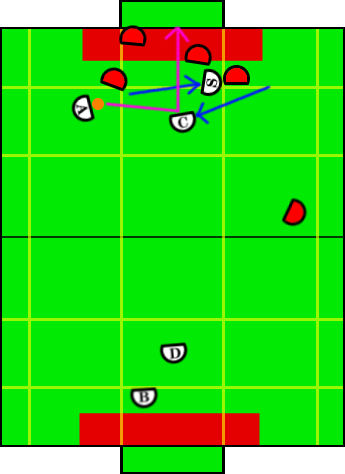

Play: Creator Assist Offense
Description:
When the creator has trouble getting open for a pass, the special op
creator slides over, covering the creators man and pulling his blocker
with him, setting up a screen and allowing the creator to shift toward the
center of the field and open for a quick pass-shot on goal.
Illustration:

Positions Present:
- Blocker
- Defender
- Aggressor
- Creator
- Special Op Creator
Position Strategies:
Blocker + Defender:
Work together cutting down shots in same fashion as described in Loose Defense.
Blocker: TandemBlockerSkill
Defender: TandemDefenderSkill
|
Aggressor:
Turn to face the creator, immediately kicking if creator gets open. If too
much time takes place, play times out and transitions back to single assist
offense.
Aggressor: PassToCreatorSkill
|
Special Op Creator + Creator:
Creator move laterally towards the aggressor towards a point where he can
complete a quick pass-shoot combo to score. Meanwhile the special op creator moves
laterally AWAY from the aggressor and aims for the robot covering the creator.
Special Op Creator: SpecialOpBlockSkill
Creator: CreatorCreateSkill
|
Transitions:
|
If the aggressor has an open shot on net, or the play timer has passed a threshold. |
Position Switching:
- Aggressor, Creator, SpecialOpCreator
|
- If creator or special op has possession of the ball and the aggressor does not,
switch with aggressor.
|
|